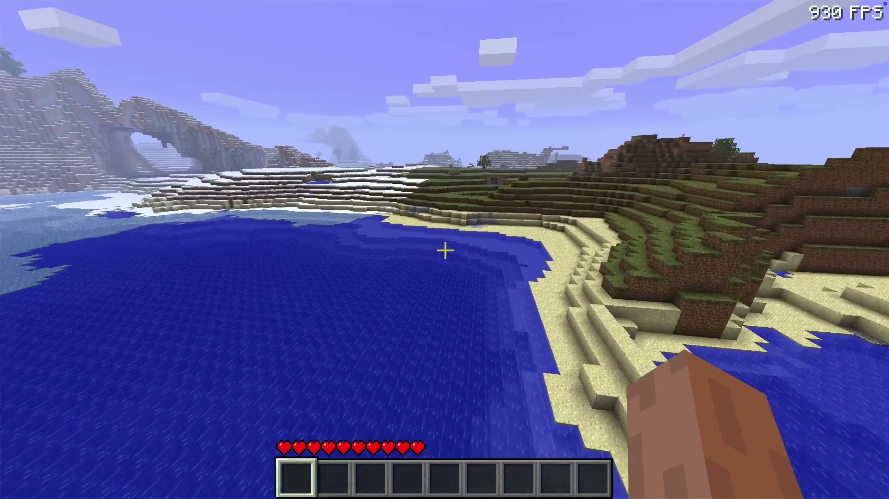
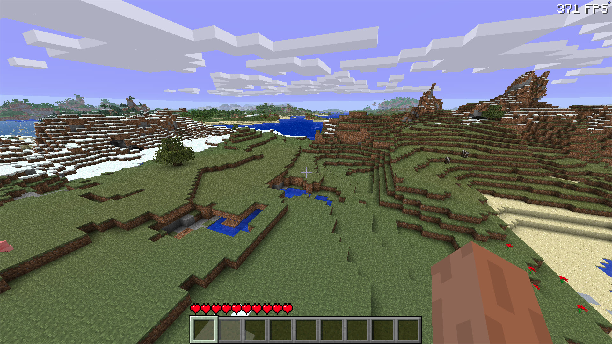
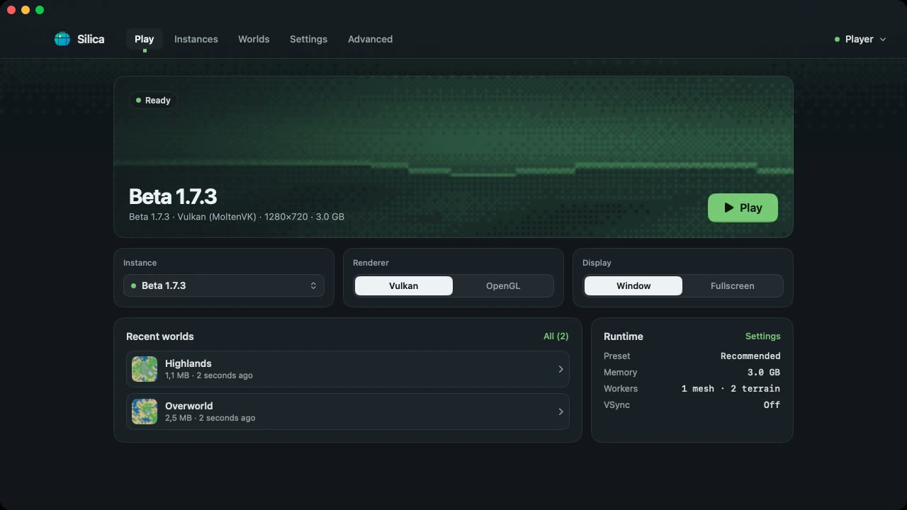

The Golden Age launcher & Vulkan engine
Golden Age Minecraft, rebuilt in Vulkan.
Alpha 1.0 through Beta 1.7.3 — plus experimental Infdev and Beta 1.8 — natively on Apple Silicon with true-textured distant LODs, Better Grass, and zero Rosetta.
Free. Needs Minecraft: Java Edition.
Frame rates: Apple M5, 1080p fullscreen. Downloads: all releases, counted live by GitHub.
One home for the Golden Age.
Launch Alpha, Beta, or experimental Infdev and Beta 1.8 in isolated instances, back up worlds, and tune settings in a native Mac app.
Faster, further, and yours.

9.3×Up to 9.3× the frame rate
Vulkan against our OpenGL baseline, with every number from the benchmark harness.
See the numbers
76chunksSee further than Beta could
Real-block distant terrain, worlds that back themselves up, a better inventory.
Explore the features
17MBFree and open source
A small download for Apple Silicon, macOS 14 and later. Your original jar stays untouched.
Get SilicaRead every line.
GPL-3.0, openly AI-assisted. The benchmark scripts and results are in the repo.
Ready when you are.
Free. Needs Minecraft: Java Edition.